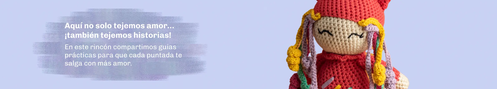
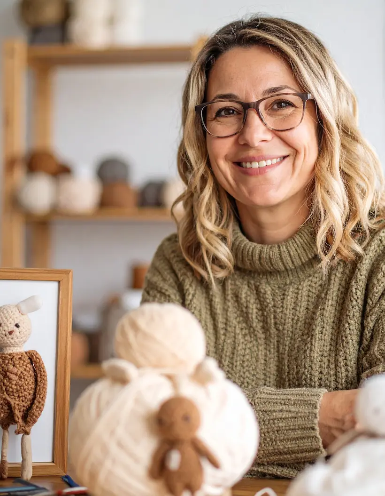
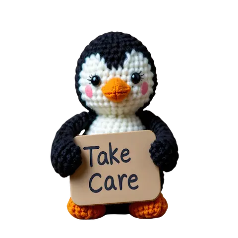
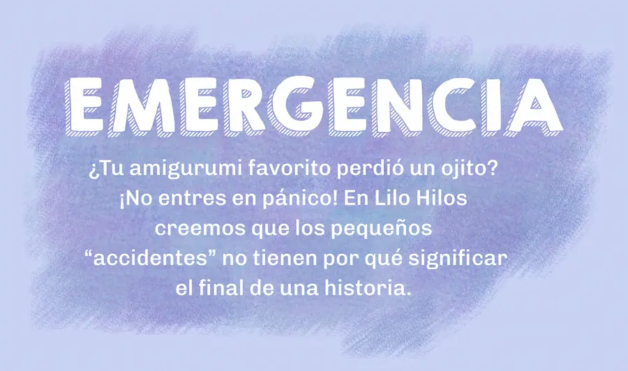

Sobre mi...
Siempre supe que quería construir algo que fuera más que un producto: algo que generara conexión, ternura y calma. Cansada de un mundo donde todo se consume y se olvida al instante, decidí crear Lilo Hilos como un refugio de lo auténtico. Aquí, cada amigurumi nace de horas de diseño, hilos cuidadosamente elegidos y la convicción de que lo hecho a mano tiene el poder de tocar el alma.
Para mí, tejer no es solo una técnica, es una forma de entrega. Cada punto es una intención, cada costura, un gesto de cariño. Creo firmemente en entregar valor con el corazón: en que un pequeño osito pueda convertirse en el compañero de alguien, en un regalo con historia, en un recordatorio de que lo lento y lo verdadero todavía existen.
Hoy trabajo desde mi taller lleno de colores, rodeada de hilos, tijeras y la energía tranquila de quienes apoyan este sueño. Con Lilo Hilos, no solo vendo amigurumis: tejo puentes entre personas, emociones y momentos que merecen ser abrazados —literal y figuradamente.
¡Bienvenidx a Lilo Hilos! Este es un rincón donde la magia se teje con hilos suaves, diseños tiernos y mucha intención. Aquí no solo encontrarás amigurumis hechos a mano, sino pequeños seres con alma, creados para acompañarte, regalar con sentido o simplemente recordarte que el mundo puede ser más cálido, uno a uno. Pasa, quédate un rato… y deja que algo hecho con el corazón hable directamente al tuyo.
Cada día en el taller es una pequeña ceremonia: elijo los hilos como quien elige palabras para una carta importante, doy forma a los diseños con calma y los despido con la esperanza de que encuentren a quien los necesita. Porque en el fondo, Lilo Hilos nació de una idea simple pero poderosa: que lo hecho a mano puede sanar, conectar y hacer del mundo un lugar un poco más tierno. Y si estás aquí, es porque también crees en eso… así que gracias, de corazón, por formar parte de este mundo.

Un poco de inspiración en video
Amor que dura: Guía de cuidados


Lo esencial para tu kit de emergencia 🧰
- ✂️ Tijeras de punta finaIdeales para recortar hilos sueltos sin dañar la tela o el relleno.
- 🧶 Hilos de algodón en colores neutros (blanco, beige, gris) y en tonos base de tus amigurumisGuarda siempre un pequeño ovillo de los mismos hilos que usamos en tus diseños (¡te los enviamos con una nota en cada pedido!).
- 🪡 Aguja de zurcir o aguja para lana con ojo grandePerfecta para reparar costuras o reforzar puntos flojos.
- 🫙 Pegamento textil (opcional, solo para emergencias extremas)Úsalo solo en zonas no visibles y nunca como reemplazo de coser. Lo ideal es siempre la costura.
- 🎀 Una bolsita de tela o cajita bonitaGuárdalo todo junto. Así, cuando surja una “emergencia peluda”, ¡sabrás exactamente dónde buscar!